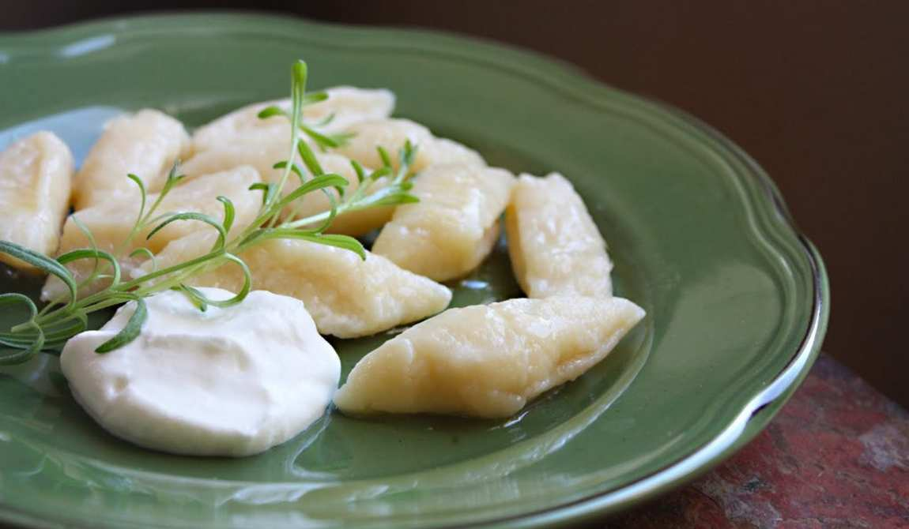
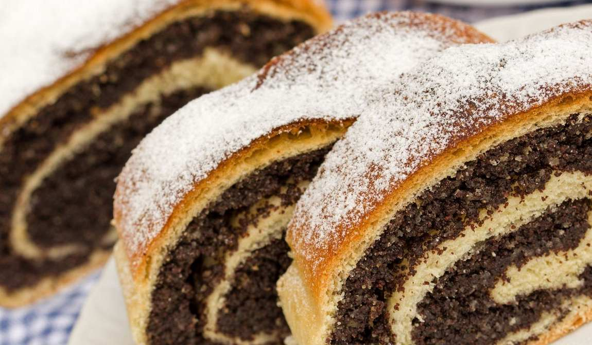

Особенности кухни
Украинская кухня – вкусная, сытная, разнообразная. Даже трудно представить, что ее основу составляют нехитрые крестьянские кушанья: готовятся они быстро и просто, а результат – отменный.
Свою роль тут сыграл теплый климат и плодородная земля. Благодаря этому в Украине хорошо растут злаковые, потому в народной кухне много каш и мучных изделий.
Летом и осенью здесь собирают богатый урожай овощей и бобовых – капусты, свеклы, картофеля, моркови, кабачков, тыквы, гороха, фасоли. Кроме того, украинцы с XIX века выращивают подсолнечник, из которого делают масло. На подсолнечном масле жарят, им заправляют салаты.
До появления подсолнечника в Украине использовали рапсовое масло, а еще чаще – смалец (топленый свиной жир). На смальце жарят и сейчас, но это более характерно для домашней кухни.
Мясо – в основном свинину и говядину – ели не так часто, поэтому старались надолго сохранить копчением или вялением. В качестве ароматных добавок использовали чеснок, хрен и зелень: даже сейчас, когда доступны любые пряности, для украинских блюд выбирают пахучие, но не острые приправы.
А еще украинская кухня вобрала в себя кулинарные традиции соседних стран. Поэтому на Львовщине готовят польские фляки, на Буковине – молдавскую мамалыгу, в Закарпатье – венгерский гуляш, а на востоке Украины – русскую окрошку.
Прижились и блюда еврейской кухни: например, украинцы переосмыслили рецепт фаршированной рыбы и добавляют в рыбный фарш немного сала – получается сочно и вкусно.
Вернуться к содержаниюНациональные блюда Украины
Сало – главная национальная еда в Украине. Свиное сало солят, варят, коптят, вытапливают из него смалец, делают шкварки, перетирают с чесноком.
У современных диетологов расходятся мнения об этом продукте, но известно, что в сале есть ценные жирные кислоты, а вредных насыщенных жиров относительно немного. Согласно анекдоту, сало вызывает склероз: съел бутерброд с салом – и надолго забыл о голоде.
Борщ – свекольный суп на мясном бульоне. В Украине красный борщ готовят по-разному: в одних областях в кастрюлю обязательно кладут фасоль, в других – чернослив, в третьих – грибы, в четвертых борщ заправляют мукой, а в пятых – копченостями.
Очень часто в готовое блюдо добавляют лек – толченое сало с чесноком, перцем и зеленью. Борщ принято есть со сметаной, а вместо хлеба налегать на пампушки – мягкие булочки, корочка которых смазана растительным маслом и чесноком.

Вареники, или пироги – одно из самых известных национальных блюд Украины. Ах, как смачно их ел Пацюк в повести Гоголя «Ночь перед рождеством»!
«Пацюк разинул рот, поглядел на вареники и еще сильнее разинул рот. В это время вареник выплеснул из миски, шлепнул в сметану, перевернулся на другую сторону, подскочил вверх и как раз попал ему в рот. Пацюк съел и снова разинул рот, и вареник таким же порядком отправился снова».
Вареники делают с начинкой из картофельного пюре, тушеной капусты, грибов или мяса, тогда перед подачей на стол их сдабривают жареным луком или шкварками – зажаренными до хруста кусочками сала.
Начинка может быть и сладкой: из творога, вишни, черники, тертых яблок – к таким вареникам подают сметану. Кроме того, делают ленивые вареники: крутое творожное тесто нарезают ромбами или скатывают в шарики и варят до готовности.
Галушки – отваренные в воде кусочки пресного теста. Их едят как самостоятельное блюдо, заправив сливочным маслом или сметаной, а иногда добавляют в суп. Реже галушки делают с мясной, творожной или ягодной начинкой.
Сыры – важная часть кухни Украины. Без пахучей брынзы из козьего или овечьего молока не приготовить банош, а вурду – сывороточный сыр – можно есть просто так или использовать как начинку для вареников.
Еще два блюда, хоть и не имеющие отношения к народной кухне, давно стали национальной едой Украины.
Это котлета по-киевски – рулет из куриного филе с кусочком сливочного масла внутри, обвалянный в сухарях и обжаренный во фритюре, а также «Киевский торт» – два слоя орехового безе, скрепленные масляным кремом.
Котлеты по-киевски готовят во многих ресторанах, а торт проще купить в супермаркете или кондитерской
Вернуться к содержаниюЗакуски
Закуски в традиционной украинской кухне – это по большей части праздничные блюда. Приготовление многих мясных закусок было способом сохранить продукт на долгое время, а овощные закуски, особенно соленья, разнообразили трапезу зимой или весной.
- Сальтисон, или сальцесон, ковбик, кендюх – вареные свиные потроха с чесноком и специями, которыми набивают свиной желудок и запекают.
- Гурка – домашняя колбаса из свиной крови или субпродуктов. В фарш также добавляют рис, пшено или кукурузную крупу.
- Полядвиця – вяленая свиная или говяжья вырезка. Это блюдо традиционно готовят на Рождество.
- Мацик – еще одна разновидность вяленой свинины. Мясо для него крупно режут, перемешивают с солью и специями, а затем плотно укладывают в свиной желудок и вялят несколько месяцев.
- Вудженина – копченое мясо.
- Крижавки – маринованная в уксусе капуста. Обычно ее маринуют со свеклой, поэтому капуста приобретает розовый цвет.
- Меживо – овощное рагу, которое можно готовить из кабачков, моркови, тыквы, баклажан, помидоров. В холодном виде меживо служит закуской, в горячем – самостоятельным блюдом или гарниром.
- Мачанка – нечто среднее между густым супом и соусом, в который можно макать хлеб или оладьи. Мачанку делают из мелко нарезанного мяса и лука, бульон загущают мукой. Вместо мяса используют грибы, добавляя в соус сметану.
- Холодець, или драгалі – холодная закуска из отварного мяса в застывшем концентрированном бульоне. В Украине часто варят свиной холодец, реже – из говядины или мяса птицы. Подают его на стол с хреном или горчицей.
Салаты
Рецепты украинских салатов бесхитростны, но разумны: в ход идет все, что растет в огороде. А весной, когда нет свежих овощей и запасы подходят к концу, делают салаты из вареных яиц, картофеля и первой зелени – например, из дикорастущей черемши.
- Мизерия - салат из свежих огурцов и зелени со сметаной, который готовят в Западной Украине и Польше.
- Варя гуцульська – полезнейший салат из вареной свеклы, фасоли и чернослива, заправленный растительным маслом.
Супы
Кроме борща, в Украине варят и другие супы, как правило, на мясном бульоне. Во время православных постов готовят супы без мяса.
Капусняк – наваристый суп со свежей или кислой капустой. Для густоты его заправляют пшеном, размятым вареным картофелем, а иногда мукой.
Зелений борщ – суп со щавелем или другой зеленью (крапива, лебеда). Нередко зеленый борщ варят с добавлением свеклы.
Бограч – закарпатская интерпретация венгерского гуляша, густой суп с говядиной.
Юшка – мясной, рыбный или грибной бульон, а также жидкий суп, заправленный овощами или крупой. Юшка з леком – это суп с заправкой из толченого сала.
Грибна (грибова) зупа, или грибна юшка – популярный в Карпатах суп из белых грибов.
Холодний борщ – летний суп на свекольном отваре, настое или квасе. Охлажденным отваром заливают свежие огурцы, вареный картофель, сваренные вкрутую яйца, мелко нарезанное мясо.
Вернуться к содержаниюМясные блюда
В отличие от кухни россии, где мясо используется мало, в украинской кухне множество рецептов мясных блюд.
Печеня – тушеное в горшочке мясо с картофелем, фасолью, морковью и луком. Иногда печеню готовят без картофеля, но тогда популярный клубнеплод подают в качестве гарнира.
Чинахи, или чанахи – похожее на печеню блюдо, распространенное на Буковине.
Смаженина – жареное мясо, как правило, свинина, но в современных рецептах и говядина, баранина, курятина. Вместе с мясом иногда жарят картофель.
Січеники – котлеты из рубленого мяса или рыбы.
Гречаники – котлеты, в состав которых входят поровну говяжий/свиной фарш и отваренная гречневая крупа.
Голубці – мясная начинка, завернутая в капустные листья. Существуют разные рецепты голубцов: в капусту могут заворачивать только мясной фарш, или мясо с добавлением риса, или даже тонко отбитые куски мяса. Тушат голубцы с добавлением томатной пасты и сметаны.
Фасульки – жареное мясо, часто ребрышки, с крупной фасолью, которое готовят в западных областях Украины.
Запечений шпондер – приготовленный в духовке почеревок (грудинка) или бекон, жирное мясо с большим количеством сала. Шпондер перед запеканием натирают солью, перцем и пряными травами.
Налисники – тонкие блины, в которые заворачивают разную начинку: фарш из отварного мяса или рыбы, тушеные грибы, сладкий творог, ягоды и фрукты, варенье.
Крученики – аппетитные мясные рулетики. Для их приготовления свиную или говяжью вырезку нарезают пластами, отбивают и в каждый пласт заворачивают начинку: грибной фарш, рубленое яйцо с луком, рис, сухофрукты. Готовые рулетики обжаривают, а затем тушат до готовности.
Вернуться к содержаниюОвощи и каши
Овощных блюд в Украине очень много. Овощи, как правило, тушат или запекают, а вот картофель и жарят, и варят, и тушат, и пекут, используют для приготовления теста и в качестве начинки.
Деруни, или тертюхи, кремзлики – оладьи из тертой картошки. В самом простом варианте деруны обжаривают до золотистой корочки и подают со сметаной. В более сложных рецептах деруны начиняют мясным фаршем, жарят, а затем запекают в горшочках с грибами и сметаной.
Картопляники, или лежні – зразы из картофельного теста с мясной, грибной или капустной начинкой.
Палюшки, или клюски – небольшие продолговатые изделия из картофельного теста. Палюшки варят, как галушки или вареники, и поливают горячим смальцем и жареным луком.
Засипана капуста – тушеная капуста, запеченная с пшенной кашей. Часто это блюдо дополняют шкварками.
Кашам в национальной кухне Украины отведено почетное место. Но если гречка, пшеничная или ячневая каша хорошо знакомы всем, то некоторые блюда из круп можно попробовать только в Украине.
Мамалига – круто сваренная кукурузная каша. Мамалыгу можно накрошить и залить горячим молоком, а можно нарезать на пласты, поджарить и посыпать тертой брынзой.
Мамалыга также служит классическим гарниром к фриптуре – сочному тушеному мясу (этот рецепт Буковина тоже позаимствовала в молдавской кухне). А еще лепешки из мамалыги можно использовать вместо хлеба.
Куліш – пшенная каша с салом и жареным луком. Такую кашу варили запорожские козаки, а сейчас это неотъемлемая часть украинской кухни. Чтобы сделать кашу сытнее, в нее добавляют картофель, морковь, грибы, реже – мясо.
Кутя – особая каша из цельных зерен пшеницы с маком, изюмом и орехами, которую готовят на Рождество.
Гречневая мука, как и пшеничная, и ржаная, использовалась для приготовления лазанок – это разновидность макаронных изделий. Лазанкам придают разную форму, иногда это просто пласты теста, сваренные в воде.
Вернуться к содержаниюРыба
Реки Украины богаты рыбой, а потому рыбные блюда – не редкость в украинской кухне. Здесь можно отведать что-нибудь простенькое, вроде жареных карасей, или сложные блюда – фаршированную щуку, завиванец из судака или леща в сметанном соусе.
В карпатских реках водится форель, или пструг. Эту ценную рыбу варят, жарят, запекают.
А еще в Украине отлично готовят речных раков. Их варят с зеленью и кореньями, а затем подают с чесночным маслом или со сметанным соусом.
Вернуться к содержаниюДесерты
Среди традиционных блюд в Украине немало сладкой выпечки. Особенно много сластей пекут на Рождество и Пасху.
Пиріжки – изделия из дрожжевого теста с начинкой, не обязательно сладкой. Для десертного стола делают пирожки с маком, ревенем, вишней, черникой, калиной, яблоками, творогом. Самая необычная из сладких начинок – фасоль с изюмом.
Перекладенець – пирог из дрожжевого теста, в котором маковая, фруктовая, ягодная или ореховая начинка выкладывается несколькими слоями, перемежаясь с тестом. В один пирог часто кладут разные начинки.
Пляцки – популярное в Западной Украине название пирогов, в которых коржи прослаиваются кремом и другими начинками. Пекут пляцки в прямоугольных формах, а на стол подают нарезанными на отдельные пирожные. Если в меню значится пляцок з люкером, можно спокойно заказывать его ребенку: люкер – это всего лишь помадка.
Сирник – восхитительный западноукраинский пирог из творожного теста. Вкус сырника украшают ягоды, цукаты, изюм, шоколад, орехи. А самые воздушные пироги получаются, когда к творогу добавляют картофельное пюре.
Вергуни, или плетуни – хрустящее печенье из тонко раскатанного дрожжевого теста, которое жарят на смальце и перед подачей посыпают сахарной пудрой.
Пундики – пончики, обжаренные на растительном масле или смальце. Сейчас их делают сладкими, а раньше пончики сдабривали жареным луком.
Птисі – эклеры.
Завиванець – рулет из дрожжевого теста со сладкой начинкой: маковой, ореховой, ягодной.
 Вернуться к содержаниюНапитки
Что готовят в ягодный сезон, когда и вареники налеплены, и пирожки напечены? Конечно, компоты и кисели. Прохладный кислый напиток из красной смородины или вишни – то что нужно в жаркий летний день.
- Маслянка – продукт, получаемый во время взбивания масла из сливок. Нежирный напиток богат белком и прекрасно утоляет жажду.
- Кисляк, кисле молоко, самокиш – простокваша, которую получают путем сквашивания при помощи молочнокислых бактерий, присутствующих в молоке.
- Гуслянка – густой напиток из сквашенного кипяченого молока, традиционный для карпатской кухни. Напитком его можно назвать условно, поскольку гуслянку лучше всего есть ложкой.
- Варенець – напиток из сквашенного топленого молока.
- Ціберей – квас из ржаной или овсяной муки, который до сих пор готовят в Карпатах.
- Узвар – настой или компот из сушеных яблок, груш, слив. Традиционно узвар делают на Рождество, но его пьют и летом как прохладительный напиток, а зимой он служит источником витаминов.
Разумеется, стоит попробовать и лечебные минеральные воды, которые добывают в Украине: «Трускавецьку», «Моршинську», «Шаянську».
Пить их постоянно можно только по назначению врача, но если покупать иногда для утоления жажды, это никому не повредит. Самую ценную воду «Нафтуся» в бутылки не разливают: она быстро теряет свои целебные свойства, и пить ее надо прямо у бювета на курорте Трускавец.
Вернуться к содержаниюГде попробовать
Найти в Украине ресторан народной кухни несложно. При всех веяниях глобализации украинские блюда не теряют популярности, и необходимый минимум национальных блюд – борщ, сало, печеню, вареники, голубцы – можно попробовать во многих ресторанах.
Особый вид ресторанов на Западе Украины – кнайпа. Это в первую очередь питейное заведение, но зачастую там хорошая, даже изысканная кухня.
К сожалению, принцип выбора ресторана «Идти туда, где обедают местные жители» в Украине не работает.
Здесь не принято часто трапезничать вне дома, а если украинцы выбираются куда-то поесть, то не обязательно предпочтут ресторан национальной кухни. Поэтому при выборе лучше всего ориентироваться на отзывы других путешественников.
Кстати, дегустировать традиционные блюда Украины можно на кулинарных фестивалях. Например, в Тернополе ежегодно проводят этнофест «Галицька дефіляда», в Великих Сорочинцах на Полтавщине – «Сорочинскую ярмарку».
На таких фестивалях можно попробовать и популярные кушанья, и почти забытые блюда Украины: саламаху, тетерю, крупник, шпундру.
А вот еще несколько фестивалей, на которых вкусно кормят:
- фестиваль борща (Борщев, Тернопольская область);
- фестиваль сала (Петриковка, Днепропетровская область);
- фестиваль баноша (Костылевка, Закарпатская область);
- фестиваль брынзы (Рахов, Закарпатская область);
- фестиваль дерунов (Коростень, Житомирская область);
- фестиваль дунайской селедки (Вилково, Одесская область).
Конечно, в Украину стоит приехать не только ради гастрономических впечатлений. Кидпассаж подготовил информацию о самых интересных туристических местах Украины: узнайте, где можно отдохнуть летом с ребенком и какие музеи нравятся детям больше всего.
Вернуться к содержанию